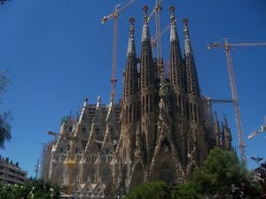
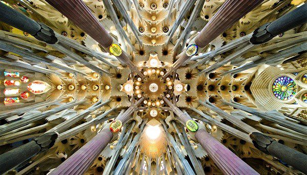
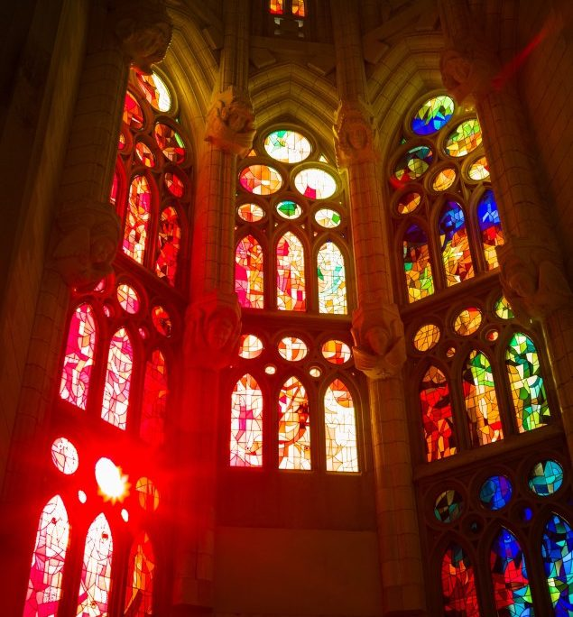

Aunque la Sagrada Familia de Barcelona es conocida por Antoni Gaudí, uno de los grandes arquitectos modernistas, su origen se remonta a más de un siglo atrás. Las obras de esta iglesia se iniciaron en marzo de 1882, concretamente el día de San José, con el arquitecto Francisco de Paula del Villar a la cabeza del proyecto. Sin embargo, debido al desacuerdo entre el arquitecto y los promotores, abandonó la obra al poco de empezar. Fue entonces cuando Antoni Gaudí, en 1883, tomó el control de la obra, dándole un giro de 180 grados para darle su estilo modernista y único. A sus 31 años, el arquitecto catalán se dedicó en cuerpo y alma a este proyecto durante el resto de su vida.
La construcción de este templo ocupó los últimos años de la vida del arquitecto catalán, que no realizó ningún trabajo importante durante los mismos. Llegó incluso a vivir en un taller junto al ábside de la iglesia para poder estar más cerca de su creación. En 1925 finalizan las obras del primer campanario de la fachada del Nacimiento, que mide 100 metros.
Sin embargo, en 1926, Gaudí fallece debido a un atropellamiento por un tranvía y es enterrado en la cripta del Templo Expiatorio de la Sagrada Familia. El mando lo toma Domènec Sugrañes, colaborador de Antoni Gaudí. Sin embargo, la Sagrada Familia sufre un incendio entre el 1936 y 1939 que destruye varios elementos de la construcción, incluida la cripta donde se encuentran los restos de Gaudí, además de provocar la pérdida de las maquetas, planos y fotografías originales del arquitecto catalán. Pese a ello, la construcción de la Sagrada Familia de Barcelona ha hecho frente a todos los porvenires y ha seguido su camino hasta la actualidad.
El arquitecto Francesc de Paula Quintana I Vidal es quien se encarga de reparar la cripta y recomponer algunas de las maquetas que fueron devoradas por las llamadas, entre otras acciones. Es en 1955 cuando comienza la recaudación de fondos para pagar las obras, lo que se convierte en una iniciativa constante hasta la actualidad. Gracias a los donativos, la Sagrada Familia puede continuar levantándose.
Lo cierto es que, pese a que se han nombrado sólo a algunos de los arquitectos que participaron en la obra, debemos mencionar también a todos los escultores que han conseguido que la fachada de la Sagrada Familia de Barcelona sea una auténtica obra de arte y a aquellos arquitectos que han dirigido la obra de este monumento hasta llegar a Jordi Faulí Oller, quien lo dirige desde 2012.
En el 2019 se realizó el 70% de la construcción de la Basílica y en este 2020 se configurará un nuevo perfil con el levantamiento de las torres centrales. El fin de la construcción de esta obra arquitectónica se prevé para el 2026, centenario de la muerte de Antoni Gaudí, lo que representa un momento muy especial tanto para el monumento como para la ciudad de Barcelona. Además, en el momento en el que concluya el proyecto, la Sagrada Familia será la iglesia más grande del mundo y sin duda una de las más espectaculares. Además, será la construcción más alta de Barcelona.
En la actualidad, se puede visitar el interior del templo pagando la entrada. Lo cierto es que se trata del monumento más visitado de España, por lo que es recomendable planear su visita con antelación. En cualquier caso, puedes adquirir la entrada básica que tiene un precio de 15 euros o bien elegir la opción de visita guiada en los distintos espacios que conforman el complejo de la Basílica de la Sagrada Familia para conocer más a fondo todas sus características, historia y curiosidades. Su precio puede llegar a ser de 30 euros, pero sin duda merece la pena conocer todos los rincones de este monumento.